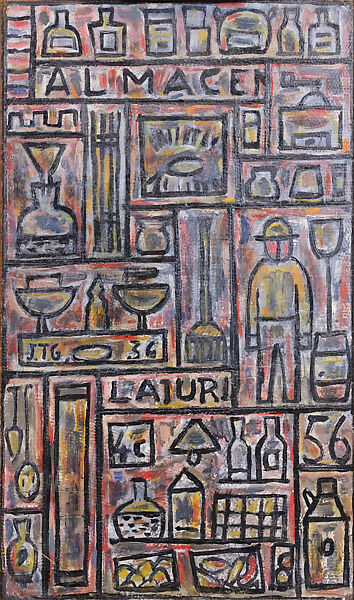

Constructive Composition, 1943
Constructive Composition, 1943

Constructivo con objectos, 1936I am a Postdoctoral Scholar at Columbia Business School. In 2026, I will join CREi as a tenure-track Junior Researcher (Assistant Professor).
I received my PhD in Economics from Cornell University in March 2025.
Research Areas
We study the drivers of business cycle volatility differences between emerging and developed economies. We develop a multisector small open economy framework with heterogeneous firms and production linkages in which firms are subject to sectoral and firm-level TFP shocks and international prices shocks. Using sector-level, firm-level, and international trade data from various developed and emerging economies, we quantify the relevant model-based sufficient statistics. We find that differences in sectoral composition between emerging and developed economies can explain up to 77% of the excessive business cycle volatility in emerging economies, while disparities in the distribution of firms account for up to 9%, and the role of international prices shocks is negligible. Despite the significant influence of sectoral composition, the decrease in volatility observed in emerging economies over the past four decades cannot be attributed to changes in their economic structure.
Firms innovate to improve efficiency and reduce their costs of production (productive innovations) and to increase customer dependency by reducing the substitutability of their products (lock-in innovations). In this paper, I quantitatively study the macroeconomic implications of lock-in innovations for aggregate productivity and market power. I develop a theoretical framework that allows firms to invest in lock-in innovations by reducing product substitutability, while also nesting standard macroeconomic models of productive innovations. A key prediction of the model is that productive innovations by suppliers increase customer firms' sales by lowering input costs, while lock-in innovations decrease customer firms' sales by allowing suppliers to charge higher prices for products that are harder to substitute. I use this theoretical insight to identify the nature of innovation in the data and calibrate the model to the U.S. economy. Informed by the observed changes in the response of customer firms' sales to their suppliers' innovations, I find that the incidence of lock-in innovations among high-markup firms has increased significantly in the post-2000 period. Moreover, had the incidence of lock-in innovations remained at pre-2000 levels, observed aggregate productivity would have been 3% higher, median markups would have stayed at pre-2000 levels, and markup dispersion would have been 9% lower.
Capital accumulation and the systematic reallocation of economic activity across sectors are two of the most salient features of economic development. These two features are interconnected through the production of various types of capital and heterogeneous usage intensity across sectors, which is summarized by the investment network. Our paper introduces the first harmonized measures of the investment network across the development spectrum and documents novel empirical regularities. We propose a simple theory linking disparities in this network to disparities in income per capita across countries. We show that Domar weights and the elasticity of output to sectorial productivity are nontrivial functions of the investment network and equilibrium sectorial investment rates. For our sample of 58 countries, we show that 33% of cross-country differences in income per capita can be accounted for by disparities in the investment network. These differences are twice as large as the role of capital in income disparities estimated through standard development accounting.
We study the sectoral reallocation of economic activity following crises such as banking and sovereign debt crises, using data from 79 emerging and developed economies covering over 100 crisis episodes between 1950 and 2019. Our analysis reveals significant and persistent shifts in the aftermath of crises. On average, reallocation toward the agricultural sector delays structural transformation by 7 to 9 years, while reallocation out of the service sector is minimal. The construction sector experiences a severe collapse, whereas output shifts to manufacturing without a corresponding reallocation of employment. To understand these patterns, we use a model of growth and structural transformation with input and demand distortions. Our findings show that reallocation in agriculture and services is largely driven by standard income and price effects, while the excessive collapse in construction reflects a sharp relative increase in demand distortions. Additionally, the divergence between output and employment reallocation in manufacturing is explained by significant and persistent changes in labor distortions following a crisis.
Cornell University — Teaching Assistant
-
ECON 6140 — Macroeconomics
Howard and Abby Milstein Graduate Teaching Assistantship Award, Cornell University -
ECON 6100 — Microeconomics, General Equilibrium
Course section notes →
- ECON 3040 — Intermediate Macroeconomics